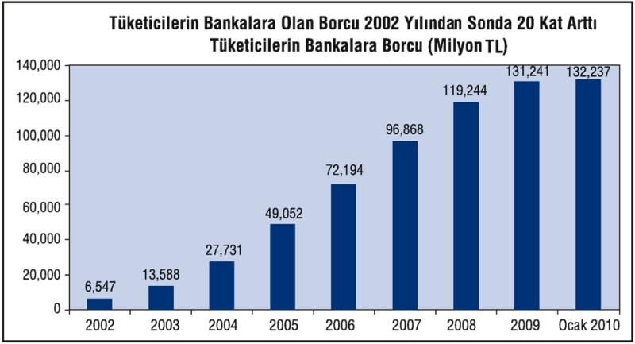

AKP iktidarına denk gelen 2003-2007 döneminin "lale devri"nde, körüklenen tüketici kredisi ve kredi kartı borçlarının geri ödenmesinde, küresel krizle birlikte önemli güçlükler yaşanıyor. Daha şimdiden borcunu ödeyememiş ve kara listeye alınmış aile sayısının 2 milyonu aştığı görülüyor. Her ay, tüketici kredisi ve kredi kartı taksitini ödeyemediği için Merkez Bankası tarafından kara listeye alınan borçlu sayısı 150 bini aşıyor. Merkez Bankası tarafından Ağustos sonunda 1 milyon 900 bine yakın olarak açıklanan kara listedeki borçlu sayısının Ekim sonunda 2 milyon 150 bini bulduğu tahmin edilirken bu sayının, yıl sonunda da 2,5 milyona ulaşması şaşırtıcı olmayacak.

Ailelerin bankalara, tüketici finansman şirketleri ve katılım bankalarına olan borçları 2002 yılından sonraki dönemde 20 kat arttı.
2002 yılında 6,6 milyar TL olan ailelerin bankalara olan borçları yüzde 1.883 oranında artarak 2009 yılı sonunda 131,2 milyar, Ocak 2010 sonunda ise 132,2 milyar liraya yükseldi.
Ailelerin borçlarındaki bu büyümede yüksek kredi kartı faizlerinin sürekli borca eklenmesi ve borcun borçla ödenmesi de etkili oldu
Bankalar, tüketici finansman şirketleri ve katılım bankalarının tüketicilerden zamanında tahsil edemedikleri tüketici kredisi ve kredi kartı alacakları hızla büyüyor.
Ailelerin borçlarının 20 kat arttığı 2002 yılından sonra batık tüketici kredisi ve kredi kartı borçları ise 78 kattan fazla artarak 106 milyon liradan 8 milyar 264 milyon liraya kadar tırmandı.
İşsizlikte gözlenen artışa bağlı olarak batık tüketici kredilerinin de artmaya devam etmesi bekleniyor.
Bankalara olan kredi kartı ve tüketici kredisi borcunu ödeyemeyenlerin sayısı her geçen yıl hızla artıyor. 2008 yılında 522 bin 590 vatandaş borcunu ödeyemediği için kara listeye alındı. 2009 yılında ise 1 milyon bin 92 kişi kara listeye girdi. Listedeki isim sayısı önceki yıllardan kalanlarla birlikte 2 milyon 20 bin kişiyi geçti.
Tüketicilere, gelirine bakmadan kredi kartı dağıtan bankalar, kart müşterilerine uyguladıkları yüksek oranlı faizlerle Türkiye'de bir dram yarattılar.
Ailelerin borçlanma iştahı, krizle birlikte, doğal olarak azaldı. 2004 sonunda 26 milyar TL dolayında olan aile borçları, izleyen yıllarda hem taşıt ve konut kredilerine olan talebin artması hem de kredi kartı kullanımının ve harcamalarının hızla artmasıyla çığ gibi büyüdü. 2005'te 46 milyar TL'yi bulan harcamalar 2008 sonunda 116 milyar TL'ye kadar çıktı. Her yıl neredeyse 20 milyar TL artarak büyüyen hanehalkı borçları, 2009 sonunda ise 131 milyar TL'ye çıktı. Bu, yüzde 6,5'lik enflasyonun üstünde, yüzde 12'lik bir borç artışı. Demek ki, borç iştahı ya da borçlanma ihtiyacı henüz azalmamış.
Aile borçlanmasında konut, ihtiyaç ve kredi kartında hareket, çeşitli nedenlere dayanıyor. Konutta, düşük faizler, tuzu kuru bir kesimde, krize rağmen kredi kullanarak daire sahibi olmada bir fırsat gibi algılanıyor. İhtiyaç kredisi ise borcu borçla kapatma ihtiyacı aslında. Kredi kartı kullanımı ile borçlanma, risk almaya devam mesajı taşıyor. Ama öte yanda ailelerin batıkları da artıyor.
Bankalar, tüketici finansman şirketleri ve katılım bankalarının tüketicilerden zamanında tahsil edemedikleri tüketici kredisi ve kredi kartı alacakları hızla büyüdü.
Hane halkının bankalara borçluluğu, önümüzdeki zaman diliminde daha önem kazanacağa benzer. Bu durum hem banka sistemi için önemli bir tehdit hem de hane halkı harcamalarına bağlı bir dizi alt sektör ve sosyal doku için. Bugüne kadar borcu borçla kapatarak, eş dost dayanışması ile yüzdürülen gemi şimdi ciddi biçimde su almaya başladı. Emniyet sübabları da bir bir tüketildi. Bankalarla başı belada olan nüfusun 2,5 milyona tırmanması, çok zorlu bir döneme girildiğinin de işareti aynı zamanda.